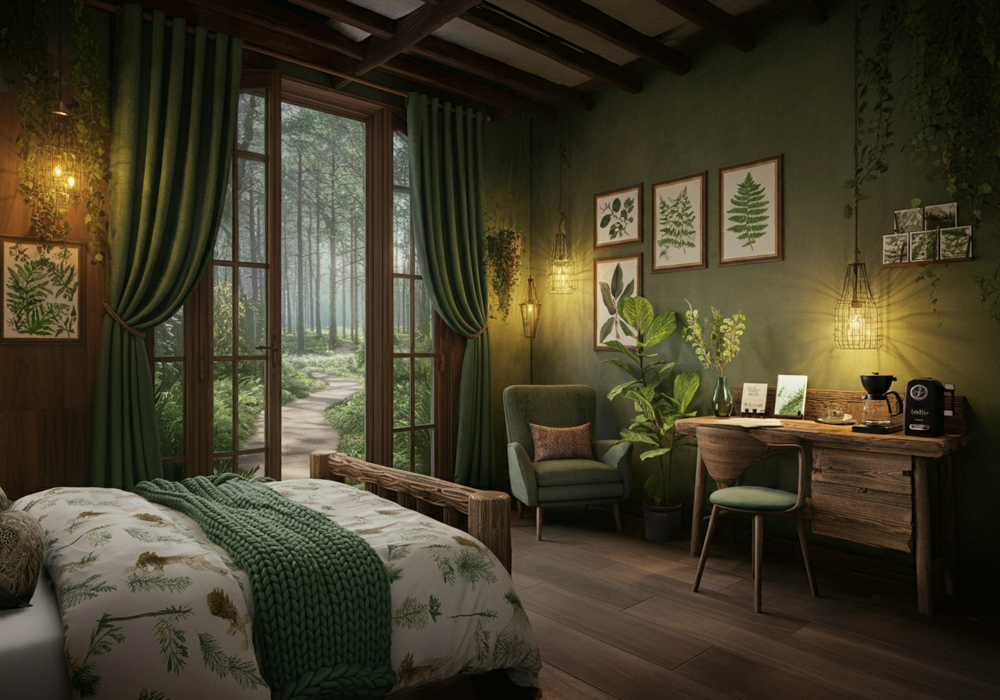

The Pine Room
Step into the embrace of The Pine Room, a sanctuary that brings the serenity of the forest indoors. With soft wood accents and nature-inspired decor, this room offers a cozy escape that feels rooted in the surrounding wilderness.
Occupancy and Rates
Suitable for two guests, with rates starting at $287 per night, including a hearty homemade breakfast and an optional free, private hike through a forest trail of your choice.

Decorated in warm, earthy tones and rich green hues, The Pine Room is furnished with a plush queen-sized bed adorned with soft, knitted blankets and woodland-patterned linens. A rustic wooden headboard, crafted from reclaimed pine, anchors the room, while potted plants and botanical wall art add touches of nature. The large window provides a scenic view of the garden paths and tall pines outside, allowing natural light to fill the room in the mornings.
Amenities
- Queen-sized bed with soft, organic bedding.
- Cozy armchair by the window, perfect for reading or morning coffee.
- En-suite bathroom with a rainfall shower and natural, locally-sourced bath products.
- Writing desk with a selection of nature-themed books and postcards.
- Complimentary coffee and tea station with herbal blends.
Situated on the first floor, The Pine Room opens up to views of the pines and the garden paths, making it easy to access the outdoors directly from your room.
For adventurers and daydreamers alike, The Mountain Room is a haven that mirrors the grandeur of the outdoors while providing a cozy, restful space to recharge.